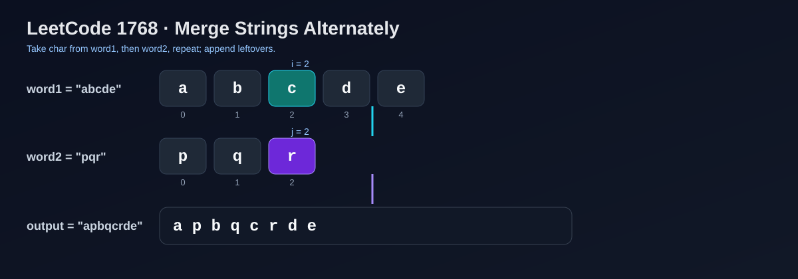

LeetCode 1768: Merge Strings Alternately (Two Pointers)
LeetCode 1768StringTwo PointersToday we solve LeetCode 1768 - Merge Strings Alternately.
Source: https://leetcode.com/problems/merge-strings-alternately/

English
Problem Summary
Given two strings word1 and word2, build a new string by taking characters alternately from each string, starting from word1. If one string runs out first, append all remaining characters from the other string.
Key Insight
The output order is fixed: word1[0], word2[0], word1[1], word2[1], .... So we only need a single forward scan up to max(len1, len2), appending each side only when the index is still valid.
Brute Force and Why Insufficient
A naive approach repeatedly does immutable string concatenation in a loop (for example ans = ans + c). This may trigger many re-allocations/copies. It can pass small tests but is not the most robust approach. Using a mutable builder keeps complexity linear and implementation clean.
Optimal Algorithm (Step-by-Step)
1) Let m = word1.length, n = word2.length, and create a mutable result buffer.
2) Loop i from 0 to max(m, n) - 1.
3) If i < m, append word1[i].
4) If i < n, append word2[i].
5) Convert the buffer to a string and return.
Complexity Analysis
Time: O(m + n).
Space: O(m + n) for the output buffer.
Common Pitfalls
- Forgetting to append leftovers from the longer string.
- Off-by-one index checks in loop conditions.
- Using immutable concatenation repeatedly in performance-sensitive languages.
Reference Implementations (Java / Go / C++ / Python / JavaScript)
class Solution {
public String mergeAlternately(String word1, String word2) {
int m = word1.length();
int n = word2.length();
StringBuilder sb = new StringBuilder(m + n);
for (int i = 0, limit = Math.max(m, n); i < limit; i++) {
if (i < m) sb.append(word1.charAt(i));
if (i < n) sb.append(word2.charAt(i));
}
return sb.toString();
}
}func mergeAlternately(word1 string, word2 string) string {
m, n := len(word1), len(word2)
out := make([]byte, 0, m+n)
limit := m
if n > limit {
limit = n
}
for i := 0; i < limit; i++ {
if i < m {
out = append(out, word1[i])
}
if i < n {
out = append(out, word2[i])
}
}
return string(out)
}class Solution {
public:
string mergeAlternately(string word1, string word2) {
int m = word1.size(), n = word2.size();
string out;
out.reserve(m + n);
for (int i = 0, limit = max(m, n); i < limit; i++) {
if (i < m) out.push_back(word1[i]);
if (i < n) out.push_back(word2[i]);
}
return out;
}
};class Solution:
def mergeAlternately(self, word1: str, word2: str) -> str:
m, n = len(word1), len(word2)
out = []
for i in range(max(m, n)):
if i < m:
out.append(word1[i])
if i < n:
out.append(word2[i])
return "".join(out)var mergeAlternately = function(word1, word2) {
const m = word1.length;
const n = word2.length;
const out = [];
for (let i = 0, limit = Math.max(m, n); i < limit; i++) {
if (i < m) out.push(word1[i]);
if (i < n) out.push(word2[i]);
}
return out.join("");
};中文
题目概述
给定两个字符串 word1 和 word2，从 word1 开始交替取字符，构造新字符串。如果其中一个字符串先用完，就把另一个字符串剩余字符直接拼接到结果末尾。
核心思路
结果的拼接顺序天然固定：word1[0], word2[0], word1[1], word2[1], ...。因此只要用一个下标从左到右遍历到两个字符串最大长度，每轮按边界判断追加即可。
朴素解法与不足
朴素写法是在循环里不断做不可变字符串相加（例如 ans += c）。这样会产生额外拷贝，效率不稳定。更稳妥的方式是先写入可变缓冲区（数组/StringBuilder），最后一次性转成字符串。
最优算法（步骤）
1）设 m = len(word1)，n = len(word2)，初始化可变结果缓冲区。
2）遍历 i = 0 .. max(m, n)-1。
3）若 i < m，追加 word1[i]。
4）若 i < n，追加 word2[i]。
5）返回结果字符串。
复杂度分析
时间复杂度：O(m + n)。
空间复杂度：O(m + n)（输出本身）。
常见陷阱
- 忘记处理较长字符串的尾部字符。
- 下标边界判断写错导致越界。
- 循环中反复不可变拼接，造成不必要性能损耗。
多语言参考实现（Java / Go / C++ / Python / JavaScript）
class Solution {
public String mergeAlternately(String word1, String word2) {
int m = word1.length();
int n = word2.length();
StringBuilder sb = new StringBuilder(m + n);
for (int i = 0, limit = Math.max(m, n); i < limit; i++) {
if (i < m) sb.append(word1.charAt(i));
if (i < n) sb.append(word2.charAt(i));
}
return sb.toString();
}
}func mergeAlternately(word1 string, word2 string) string {
m, n := len(word1), len(word2)
out := make([]byte, 0, m+n)
limit := m
if n > limit {
limit = n
}
for i := 0; i < limit; i++ {
if i < m {
out = append(out, word1[i])
}
if i < n {
out = append(out, word2[i])
}
}
return string(out)
}class Solution {
public:
string mergeAlternately(string word1, string word2) {
int m = word1.size(), n = word2.size();
string out;
out.reserve(m + n);
for (int i = 0, limit = max(m, n); i < limit; i++) {
if (i < m) out.push_back(word1[i]);
if (i < n) out.push_back(word2[i]);
}
return out;
}
};class Solution:
def mergeAlternately(self, word1: str, word2: str) -> str:
m, n = len(word1), len(word2)
out = []
for i in range(max(m, n)):
if i < m:
out.append(word1[i])
if i < n:
out.append(word2[i])
return "".join(out)var mergeAlternately = function(word1, word2) {
const m = word1.length;
const n = word2.length;
const out = [];
for (let i = 0, limit = Math.max(m, n); i < limit; i++) {
if (i < m) out.push(word1[i]);
if (i < n) out.push(word2[i]);
}
return out.join("");
};
Comments